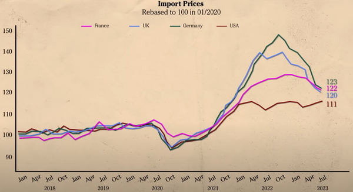
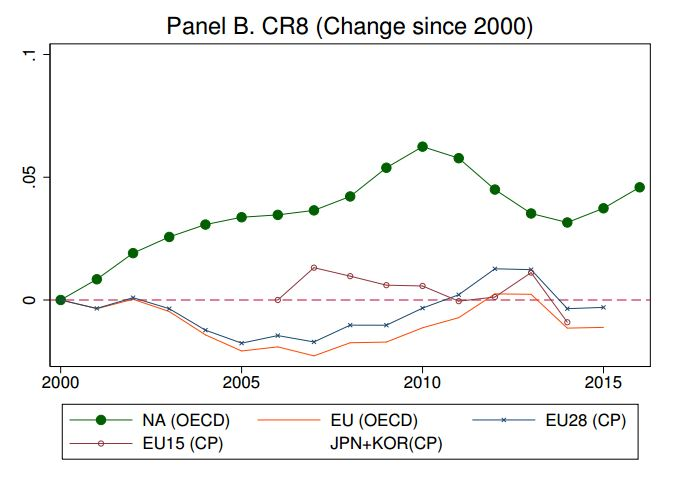
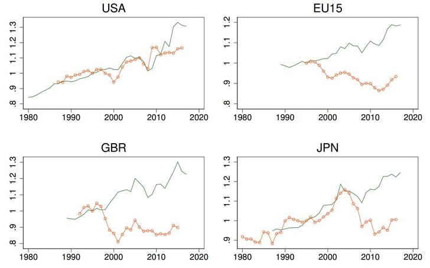
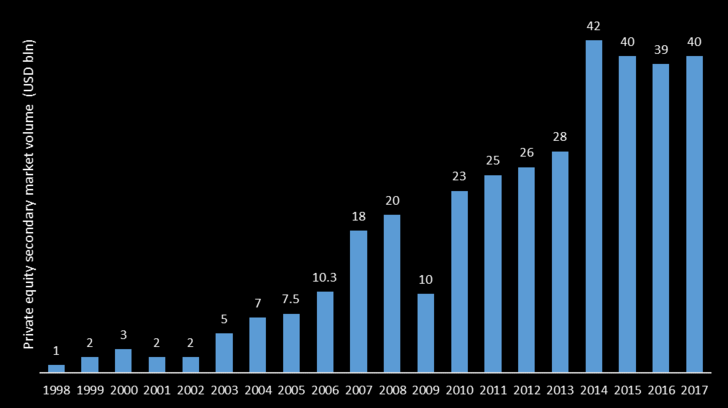
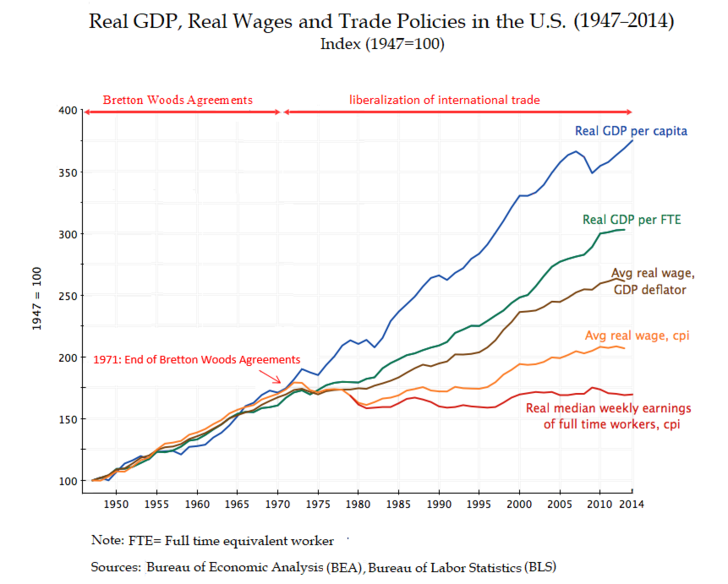

【金融】【歷史】金融史觀（一）歷史由來
2023-11-20 23:55:00
原文网址：https://blog.udn.com/MengyuanWang/180084861
金融史觀的由來
貫穿整篇《國際金融未來趨勢》有一個隱性前提，亦即當代美國的所有重要政策和行爲都出於頂尖富豪的金融利益考慮，因此這些金融利益也是決定現代歷史進程的引領性因素，後續國際事件若非針對美方政策和行爲的反應，也至少深受其影響；這可以被稱之爲“金融史觀”。金融史觀是唯一能合理地解釋既有現代歷史脈絡，並精準地預測未來演進趨勢的完整邏輯認知架構，因此值得本文先做完整的回顧介紹，再應用到對國家決策的建議之上。
金融史觀的有效性來源十分明確，亦即最近半個多世紀發生在美國的四大演變：1）美國完善第三世代殖民帝國模式（第一世代是殺人奪地，例如北美和澳洲；第二世代是外派官僚通過代理人統治，例如英國治下的印度和香港；第三世代則改以意識形態的宣傳洗腦爲主、軍事威嚇爲輔），藉此成功地將全球都納入單一殖民帝國的統治下；2）美國財團巨富對其國内政治、社會、經濟、文化、學術、輿論獲得全面掌控；3）美國開發出對全球財富的潮汐式金融收割，取代了第一世代殖民帝國的吞噬消化和第二世代的財政掠奪；4）潮汐式收割手段所依賴的產業外包、貨幣刺激和借貸消費，創造了全球化產業鏈的國際經貿格局，並對所有參與的經濟體進行持續性的興奮劑效應。
金融早先並沒有這麽大的分量，而只是國際上制定社會、政治、軍事、科研、文化等等政策時的輔助性考慮。但即使如此，偶爾還是會出現造成決定性影響的案例，例如Hitler在1933年當政（值得一提的是，《我的奮鬥》以在東歐構建第一世代殖民帝國為最終目標，日本則企圖以第二世代模式獨占東亞，所以二戰可以總結為第三世代和既有第二世代殖民帝國聯手打敗了企圖新建第一世代和第二世代殖民地的聯盟；戰後十餘年則是奉行第三世代原理的美蘇兩强清掃第二世代帝國殘餘勢力的過程）之後，啓用原中央銀行行長Hjalmar Schacht為經濟部長，為納粹黨的經濟復蘇政策提供了專業的管理監督和財政安排。
然而Goring在1936年被任命為四年備戰經濟計劃的總管（Reich Plenipotentiary of the Four Year Plan），接著在1937年成功排擠了Schacht。但Goring只擅長宮鬥而不能任事，納粹德國的財政金融很快被徹底透支。1938年末的慕尼黑會議中，英國不但同意讓Hitler兵不血刃地收回Sudetenland，而且實質默認德國復興為國際一流强權地位。這原本是德方依照既有戰爭計劃，先修養生息到至少1940年、同時安撫分化英國的天賜良機，但因爲外匯見底、赤字過高，五個月後捷克發生動亂，德國爲了搶奪Prague的黃金儲備便悍然撕毀剛剛簽訂的和平協議，從而確立英國你死我活的敵對仇視和歐戰的提早到來，奠定了納粹德國後來一系列冒進與失敗的基礎，並為後世留下一個明確的教訓：在面臨嚴峻國際態勢之時，財政金融政策上的輕率短視足以亡國（參考《韓非子》：“好罷露百姓，煎靡貨財者，可亡也”）。
美式金融殖民帝國的演進
金融利益演化成爲美國政策和國際歷史的最高主導力量，轉折發生在1970年代初。越戰引發美國的通脹壓力和財政赤字，Nixon選擇打破Bretton Woods體系下美元對黃金的錨定，以便無限印鈔。從之後的黃金價格變動來看，美元從此因超發而被稀釋了50多倍；換句話説，所有現存美元的總和價值中，超過98%是過去50多年無中生有的；這是美國利用金融危機反過來對外收割金融利益的第一次嘗試，讓我們稱之爲模式A。
與其同時，起源自芝加哥大學經濟系的“市場萬能”思想改造運動，作爲美國億萬富豪奪權計劃的前鋒，進入了白熱準備階段，推行絕對自由放任經濟、解除所有政府監管的智庫和其他代理巨富利益的NGO如雨後春筍，例如原1938年成立的American Enterprise Institute於1972年大幅增資，The Heritage Foundation成立於1973，Rockford Institute 1976，Cato Institute 1977, Manhattan Institute for Policy Research和Reason Foundation 1978，Claremont Institute以及Pacific Research Institute 1979。與其同時，貨幣濫發剛好撞上兩次能源危機，導致不但通脹一發不可收拾，經濟成長也低迷不振，這就是著名的“滯漲”。因爲百姓對經濟的直觀感覺，最主要因素正是通脹率和失業率，這兩者之和被稱爲“痛苦指數”“Misery Index”；滯漲的意義便在於人民痛苦的最大化。
滯漲在美國的立即效應，反倒是促成財閥的宣傳努力於1980年的大選中結成正果，大資本代言人Reagan入主白宮，他立刻動手拆除羅斯福以來的社會主義政策，放任財團搜刮國民勞動成果，此前50年的貧富差距減縮自此扭轉（參見來自《Wealth Inequality in the United States since 1913: Evidence from Capitalized Income Tax Data》的下圖以及前文《富豪口袋里裏的國家》；請注意，因爲放任貧富差距增大可以加速資本纍積，而消弭貧富不均卻必須消耗大量人力和財力資源，貧富差距在實質上是一種隱性的國家負債，類似的隱性負債還有環境剝削、房地產炒作、階級固化、基礎教育機會不平等、以及下文詳細討論的經濟虛擬化和金融化）。恰好此時以新任美聯儲主席Volcker為代表的愛國知識精英，出於對滯脹捲土重來的憂慮，爲了削弱工會對通脹的加成效應，勉强同意放行智庫和院校所推行的有益於提升利潤、但也挖空國家實體產業實力的外包（Outsourcing）風潮。這不但正式開啓了現代國際經貿的全球化階段，從此美國的外交大戰略也越來越圍繞著產業外移所創造的新金融態勢來為危機期間做最大收割而精進演化。

1990-1991年，美國爲了維護意識形態和國際地位，依靠宣傳忽略和軍事脅迫，同時引導蘇聯和日本兩個一級强權的主政者采取自殺性政策而自爆，從而順便獲取了史無前例的巨量金融收益；其中既有一次性的抄底，也有持續性的收割，可稱之爲模式B。其後，作爲日本狂妄不遜、不守殖民地本分（參見1980年代的《日本第一》和《日本能説不》等書）的懲罰，將早先來自美國的半導體和微電子技術與產能轉交給南韓和台灣。之所以不自己收回，原因在於高端製造業依舊是辛苦錢，美國以技術支援和開放市場等互利手段放牧養肥生產國之後，不但企業利潤更高，還可以尋機做金融宰殺收割，獲利遠高於自己辛辛苦苦地培養（請考慮維持優質基礎教育所需的稅收，以及快樂教育方便上層子弟脫穎而出，以加强階級固化的效應）並管理國内的昂貴勞動力。
1997-1998年的亞洲貨幣危機，是美國財閥第一次精確針對外包受益國家的有計劃規模性宰殺，反映了金融統治階級對潮汐式收割原理的融會貫通。其中強行收囘美元債結合做空當地貨幣的方案（收割模式C）可以簡單追溯自Soros於1992年狙擊英鎊成功獲取暴利的經驗啓發。不過由IMF實際執行Coup de Grace（致命一擊；參見前文《美元的金融霸權（二）》）以强迫被害國賤賣民族資產的過程卻過於粗暴、太著痕跡，使得其後大部分出口導向型國家不約而同地記取教訓，一旦經貿環境穩定下來就開始全力纍積外匯儲備，從而大幅削弱了美國金融勢力藉由美元債來製造他國實質破產的機會，但仍為美方保留匯率變動剛好配合美元流出流入周期的金融利益收獲。
然而正因爲國際外匯儲備在其後十餘年快速提高了一個數量級，由一萬多億美元增長到超過十萬億（而且持有者從歐洲轉爲亞洲國家），一方面幫助美國在同時出兵阿富汗和伊拉克的前提下，仍然輕鬆保持通縮狀態（另一個主要貢獻來自中國加入WTO之後，提供了更廉價高效的外包），另一方面也導致這些巨額美元儲備必須回流美元金融資產，爭奪越來越稀罕昂貴的投資回報，結果自然促成了2008年的次貸危機。究其本質，其實是從超低價獲取外國優質資產，改爲以超高價出售本國劣質資產（收割模式D），只可惜並不是每一家美國銀行都像Goldman-Sachs、JPMorgan、Morgan Stanley和Wells Fargo那樣能夠精確預估詐騙後的最佳脫身時機，因而有了Lehman倒閉事件。
但這裏的直接受害者，主要還是來自歐洲的儲蓄，尤其是德國的中小銀行。這些金融機構其後不得不緊縮融資，間接引爆2010年自希臘起始的歐元危機，削弱了美元的競爭者，歐元佔國際外匯儲備的份額自危機高峰2012年之後盛極而衰，算是美方的一個連帶收穫；參見前文《希臘與歐元》和《再談希臘與歐元》。此外當時的中國主政者在救市過程中選擇投入四萬億元（此爲中央政府的投入，若連地方政府也包含在内，總額超過九萬五千億），遠超維繫國内經濟平穩運行所需，一方面幫助美國恢復，另一方面則創造遺留至今的財政和房地產窟窿，不但是又一個收割模式B的成功案例，也示範了因欠缺金融史觀而歧路亡羊的危險。
美國在2008年危機中也受了暗傷，因而警覺到被中國超趕的壓力，因此而發動了主流媒體全面抹黑中國形象，為扼殺中國預鋪全球共識（證據之一是自2009年起，中國忽然成爲昂撒主流媒體最常討論報導的國家，而且基本全是負面描述；參見前文《Trump的權力萎縮》中的附圖）。這裏中國不但代表著一個極端肥美的潛在宰殺對象，更重要的是中國的崛起為第三世界提供了對殖民體系頂層先進能力和資源的替代作用，其他開發中國家可以不必冒被收割的危險就獲得發展經濟所需要的技術、資金、基建、管理、市場等等支援，而且即使選擇留在歐美體系，也能因來自中國的競價而受惠。這個競爭使美國對外金融收割困難度大增，所以從美方的觀點只能勢不兩立、有我無他。這是金融史觀下，無比明確的中美關係基調；任何試圖用意識形態、勢力劃分、文化差異、歷史傳承、雙邊利益、國内政治等等角度來詮釋中美衝突，從而“求同存異”、尋找 “恢復友好合作”轉機的想法，都是完全不切實際、自作多情的自殺性行爲。
在輿論造勢的同時，美方先將金融收割模式A的貨幣超發手法進化為量化寬鬆，以求從次貸危機後的衰弱階段恢復元氣。2014年國内經濟終於緩過氣來，美聯儲得以暫停量化寬鬆，Obama政權立刻挑起香港動亂，以尋求模式B的政治顛覆，同時啓動了第一版的中美脫鈎，積極推動TPP和TTIP，並於次年完成TPP談判。中美脫鈎在美方地緣戰略策略上的基本邏輯，從金融史觀出發可以簡單解釋：美國潮汐式收割體系中用來放牧的草料，包括借貸消費所撐起的美國市場、產業外包連帶的生產技術轉移、和美元超發所帶來的廉價資本，中國大口大口地吃，事後卻只肯偶爾出血、拒絕被徹底宰殺，遠遠更嚴重的是還大幅阻礙其他牲口被宰殺，那麽盡速將中國剔出這個金融放牧體系當然是最本能的反應。
過去三年，世界處於多事之秋。2008年以後美元的巨額超發，原本就讓新一場危機注定成為重複1970年代的通脹模式，其嚴重性卻在新冠疫情突然發生之後被意外放大，從而在起自2021年的一年多期間内，賦予不願意也不可能接受美國殖民體系底層地位的兩大獨立工業國（亦即中俄）一個史無前例的短暫反抗窗口，可以通過對美國通脹危機名正言順、合法合規的自我保護手段而加速後者的衰敗。這個國際反殖民革命的天賜良機，來自美國在新冠疫情衝擊下對國内消費所施加的三萬多億美元緊急財政刺激，自然造成所有消費品都嚴重供不應求的混亂局面。原本人民銀行即使無視國家自身利益和友邦戰略需求，只盲目依循美式貨幣理論，也應該讓人民幣大幅升值，但美國政府出於扼制通脹的需要，原地扭轉前幾年對中方“人爲操弄壓低匯率”的指控和制裁，反過來私下要求人民幣和歐元緊急貶值，而這兩個中央銀行居然都乖乖聽命，從2021五月至2022九月，美元得以對人民幣升值14.7%、對歐元升值23.0%，導致進口物價成爲幫助美聯儲渡過這一輪通脹危機的主要助力（參見下圖所示的進口物價演化過程，對應美國的紅褐色曲綫顯然占了大便宜）。

【後註一，2024/02/18】今天看到這篇2019年的論文（參見《From Good to Bad Concentration? U.S. Industries over the past 30 years》），雖然其明面上的道理很淺顯，討論的是近年來美國國内行業的普遍寡頭化，但與正文對照之後，卻可以看出額外的脈絡，值得在此一提。先看下圖中的各國CR8指數（行業中最大8強的總市場份額，用來測量寡頭化程度），可以簡單看出，只有美國（“NA”“北美”）在2000年後一騎絕塵。

下圖中的綠綫是銷售總額除以貨品進價的比值，用來測量外包給中國製造之後，成本被壓低的效應。很顯然全世界的商家都獲益於成本減低，但代表毛利率的紅綫，卻只有在美國才一路上升；這只能是寡頭化的結果。

請注意，2000年前後是關鍵轉折點，雖然這篇論文的作者無法解釋其來源，但讀通正文的讀者應該知道，該時間點恰恰契合亞洲新興出口國在1997年金融危機後恢復過來，開始纍積十萬億美元外匯的起點。這些新美元外匯儲備必須回流美國，以尋求美元定價的金融資產，於是人爲地大幅壓低了當地資金的價格，也就是舉債的難易和利率，間接地促成Private Equity私人股權投資的快速興起和擴張，參見下圖。他們拿了輕鬆借來的大筆美元資金，購並各式各樣的企業，尤其注重製造寡頭、削弱競爭，以求迅速提高資本報酬率。最近我對High Finance的嚴厲批評，反復提到其對實體經濟和全民福祉必然造成巨大傷害，這裏是許多機制中的一個。中國與華爾街合作互通，不但是喂養邪惡核心，也在污染自己的經濟和社會，大幅消耗隱性公益，長期後果極爲嚴重。

【後註二，2024/10/15】小孩在大學轉修經濟學之後，父子倆又多了一個共同興趣（另一個是同樣每天找數學題來自我挑戰磨礪，只不過他喜歡算機率，我更喜歡做積分；而研究經濟，我一向從第一原則出發、做獨立的邏輯推演，他則廣汎參考既有的分析，尤其是非主流的意見）。今天我在和他討論這篇博文的時候，他指出有一本相當冷門的老書《Economic History as it Happened (Stagnation and the Financial Explosion)》早在1987年就已經做出概略的預言，指出金融化和虛擬化會掏空經濟民生；作者在Reagan剛動手挖實體產業的墻脚沒幾年就已經預見潛在問題，可見美國不是沒有聰明人，只不過真理完全擋不住資本逐利的衝動，正確的分析被徹底排除出主流，以致學院裏只剩下利益集團的公關謊言。
【後註三，2025/01/14】今天看到這篇文章（參見《比经济乏力更可怕的，是承接了过量的成本转嫁》），頗感欣慰，因爲它恰恰基於正文所宣導的金融史觀來反思中國的國際環境和財經政策。不過請注意，文章的作者來自經濟系、而不是金融系，對過去幾年中國金融專業的諸般重大失誤也多所回避，所以其所代表的學術思想覺醒只能算是在正確方向的一小步，我們與真正的改革糾錯，還有相當的距離。
【後註四，2025/03/08】上面【後註二】介紹了一本1987年就預言美國產業空洞化惡果的老書，今天注意到另一本1993年批判快樂教育的書（參見《Inside American Education》，其主旨是“criticizes the fact that the （American education） system has discarded the traditional goals of transmitting knowledge and fostering cognitive skills in favor of building self-esteem and promoting social harmony”“批評美國教育體系抛棄了傳遞有用知識和建立思維能力的傳統任務，轉而强調自信和和諧”；既不學習知識又不練習思維，這是愚化，再加上迷之自信和從衆效應，則是絕對的愚化），再一次示範了正確先見被自私行業集團遮掩打壓的後果，值得心懷國是的讀者深思。
【後註五，2025/07/14】剛剛看到下面這張圖（由Wiki編輯根據發表於2015年的《Wage Stagnation in Nine Charts》以及《Understanding the Historic Divergence Between Productivity and a Typical Worker’s Pay》兩篇論文綜合整理而得，參見《File:Real GDP, Real Wages and Trade Policies in the U.S. (1947– 2014).png》），覺得對正文有補充印證的價值，所以在此爲大家簡單介紹。
{kind=link}

藍綫是人均GDP，也就是簡單地將總新創美元財富除以人口；綠綫是等效勞工的GDP，約當於總財富除以工時；褐綫是平均勞工收入；橙綫是每個職位的平均工資，這低於前者主要因爲勞工被迫增加工時，或甚至同時負擔兩個工作職位；紅綫則是褐綫的中位版本，其明顯低迷代表著平均值被少數頂級薪資大幅拉高了，例如金融業者。這裏沒有列出橙綫的中位版本，然而我們可以從前面幾條綫的分歧趨勢簡單推論其是隨時間而大幅下降的；換句話説，一個典型的美國勞工崗位，如果保持工時不變，那麽實質薪資在過去幾十年有明確而顯著的降低。
這些曲綫顯示了美國貧富差距加劇過程中的幾個細節維度：首先雖然總GDP上升率似乎維持不變，但分配上出現了很大的分歧，藍綫、褐綫和紅綫大致反映著Top 1%、top10%和bottom 90%的收入演化，顯然是富者越富、貧者越貧。其次藍綫與綠綫、褐綫與橙綫之間的差異，則反映了勞動群衆爲了彌補分配不均而增加工時的努力，代表著生活水平的進一步隱性下降。此外，貧富分歧發生的轉折點，正是打破Bretton Woods協議到全面外包的那幾年，因而讀者可以簡單拿來和正文敘事做對照印證。
5 条留言
https://www.quora.com/Why-will-South-Koreas-shipbuilding-industry-collapse-rapidly-in-2023
文章结论主要因素就是美国加息导致韩国造船业崩溃. 中国虽然劳动力成本比韩国低, 但是造船业是一个高度成熟, 高度杠杆的行业, 船厂往往要同时建造多艘船. 过去韩国可以从海外借到便宜的美元, 这些融资降低了不可忽略的资金成本, 足以弥补劳动力成本的差距. 虽然中国技术在过去十年突飞猛进, 这也能解释过去十年中国造船业的发展. 但是中国的造船份额从未超过40%, 并不能解释2023年高达68%的份额.真正原因就是美国的加息, 导致利率高昂. 但是中国目前国内利率不仅没上升, 还略有下降, 只有美国一半. 船厂可用国内人民币贷款, 从国内买建造所需原料, 所以成本可控.
我觉得这是一个很生动形象的例子, 帮我们理解加息对实体民族工业的抑制, 以及为什么不能外汇自由兑换人民币, 所以放在这里. (已概括内容且提供作者名字, 应该不算违反博客规则)
中國造船業的確在技術上還稍微落後韓方，同樣功能的船隻往往多出百分之幾的死重，但在成本上一直有些優勢，足以彌補前述的不足。韓國靠的則是來自歐美人爲的技術、資本和市場支援；現在國際資本價格開始向天然合理的利率回歸，就保不住市場份額了。
人类从农业社会，走入工业社会，现在正在进入信息化社会。农业社会，人力本身是最重要的财富，人多力量大；工业社会，实体资本是最重要的财富，谁掌握了原材料开采、工业生产、商品输出的完整产业链，谁就是霸主；信息化社会，控制虚拟信息的生产、流动、稀释成为了最重要的财富增殖手段。半个世纪的信息产业基础设施建设，极大加速了虚拟信息的流动，是美国快速搜刮全世界财富的硬件基础。
信息在信息论中是用概率定义的，所以信息的反面就是风险。高风险高回报是公平的游戏，而无风险高回报则很不公平，本质上是风险转嫁。风险转嫁，有三种主要途径：1. 自己坐庄，直接控制信息的产生；2. 掌握独家的、关键性的信息流管道，对信息反应快；3. 制造噪音，误导对手方接盘。有人举过例子：“温州人的资本主义进化路线图，从几分几角钱的小生意，迅速发展成为小商品的规模巨大的产业，再进入商品城的收租地主领域，再进入股市和房市的投机领域，一步一步与生产分离，一步一步走向虚拟化。”而在美元霸权中，美联储是庄家，金融市场是管道，美宣是黑嘴；这是美国搜刮全球财富的软件基础。
单极霸权，因为有绝对权力（信息），而会造成绝对的腐败。所以良性的世界金融体系一定要是多极化的，有负反馈信息，有所制衡，系统才能稳定。
最後我做一個小糾正：自由市場不可能穩定，這是因爲資本纍積的過程先天包含很强的正反饋，Piketty所討論的富者越富、貧者益貧效應還算是慢的，寡頭合作形成等效獨占卻是立即急劇提升利潤的不二法門，所以資本掌控的信息體系，不論原本有多少個極，必然會聯合起來做出壟斷，也就是構建謊言帝國；過去70年美宣的墮落是完美的示範。
江竟有如此的魄力和手段，剛親自掌權就推動根本性的軍隊體制改革，很多人（包括我自己）都對他有所低估。